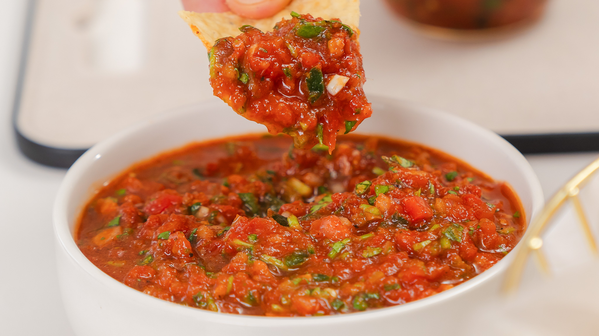

Salsa

Description
A classic tomato-based salsa that is fresh, zesty, and perfect for chips or tacos.
Ingredients
- 4 ripe tomatoes, diced
- 1/2 cup diced onion
- 1/4 cup chopped fresh cilantro
- 1 jalapeño, finely chopped
- 1 clove garlic, minced
- 1 tablespoon lime juice
- 1/2 teaspoon salt
- 1/4 teaspoon ground cumin
Instructions
- Combine tomatoes, onion, cilantro, jalapeño, and garlic in a large bowl.
- Add lime juice, salt, and cumin; mix well.
- Let the salsa sit for at least 30 minutes to allow the flavors to meld.
- Serve with tortilla chips or as a topping for your favorite dishes.